PCA & eigendecomposition
Reader-friendly version of the 67 lecture slides: the lecture content in normal flow, with figure descriptions and data tables where the figure carries data. Open the presentation.
Slide 1

PCA & eigendecomposition
Slide 2
Last time: comparing representational spaces
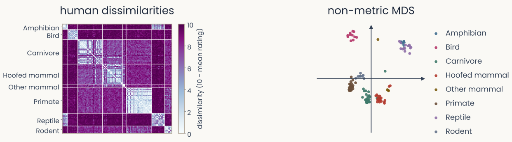
Left: the 120 animal photographs as a dissimilarity matrix built from people's ratings, blocked by animal category. Right: the two-dimensional map non-metric MDS recovers from that matrix, each point one photograph, coloured by category, with primates, birds and reptiles falling in separate regions
Open full-size figure{kind=link}
- RDMs describe which stimuli a system treats as similar or different.
- Comparing RDMs lets us ask: do two systems organize the same stimuli similarly?
- MDS recovers a psychological space whose distances approximate the judged dissimilarities.
Slide 3
How many dimensions describe the variation?
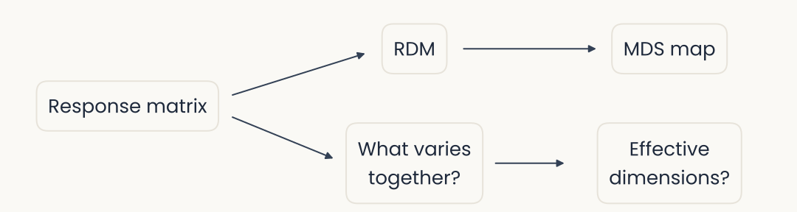
A response matrix connects to the familiar RDM and MDS map above. Below are the new questions: what varies together, and how many effective dimensions describe the variation?
Open full-size figure{kind=link}
- MDS summarized dissimilarities as coordinates in a psychological space. Now return to the response matrix: hundreds of measured dimensions—pixels, features or neurons—for each stimulus.
- If many responses vary together, their variation may occupy fewer effective dimensions. How many are needed, and what is lost when we retain only some of them?
Slide 4
Can fewer coordinates capture the variation?
Which directions capture most of the variation, and what do we lose when we retain only a lower-dimensional description?
- Start with two pixels from the same photographs.
- Find a direction, project onto it, and reconstruct.
- Use the same operations to study images and neural responses.
Slide 5
Why look for a direction at all?
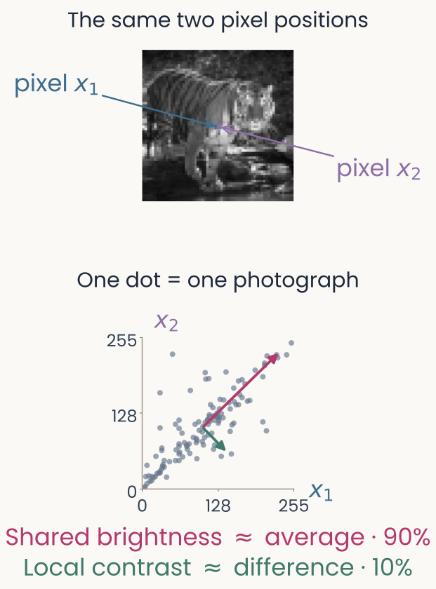
A photograph at 64 by 64 with two adjacent centre pixels outlined, one blue and one magenta; below, the values of those two pixels across all 120 photographs form a cloud stretched along a long shared-brightness direction approximately corresponding to their average and a short local-contrast direction approximately corresponding to their difference
Open full-size figure{kind=link}
- Take 120 photographs and read the brightness at the same two pixel positions in each.
- One dot is one photograph: its two coordinates are those two pixel values.
- The values tend to rise and fall together. Could one number describe much of that change?
Slide 6
Why look for a direction at all?
The same figure again: the two outlined pixels above, and below their values across the 120 photographs with a long shared-brightness direction approximately corresponding to their average and a short local-contrast direction approximately corresponding to their difference
Open full-size figure- Along the long arrow, both pixels brighten or darken together. Its weights are close to , so it behaves like their average and accounts for 90% of the variation.
- Along the short arrow, one pixel brightens as the other darkens. Its weights are close to , so it compares the two pixels and accounts for the remaining 10%.
- For this pixel pair, PCA learned directions close to average and difference.
Slide 7
From the same cloud to one distribution
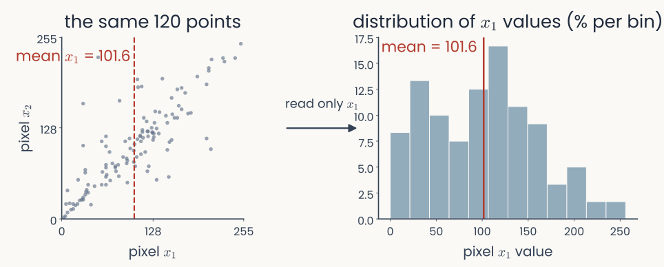
The same two-pixel cloud from the previous slide appears on the left, with a vertical line at the mean x1 value of 101.6; an arrow labeled read only x1 leads to a histogram of those same 120 x1 coordinates with the identical mean marked
Open full-size figure{kind=link}
- These are the same 120 dots. For the moment, read each dot's horizontal coordinate and set aside.
- The histogram is the distribution of those 120 values. Their mean is 101.6; their spread tells us how much this measurement varies across photographs.
Slide 8
From observed values to a Gaussian model
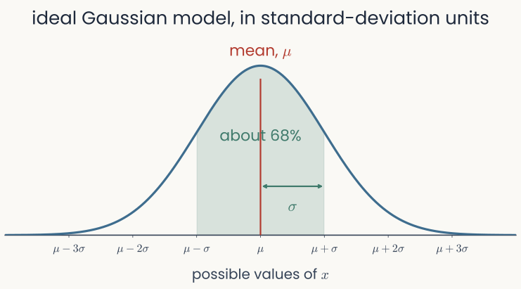
A complete symmetric Gaussian bell curve from three standard deviations below its mean to three above, with the mean marked, the interval of one standard deviation shaded, and approximately 68 percent written inside it
Open full-size figure{kind=link}
- The previous histogram showed observed pixel values. This is an idealized reference model, not an assumption PCA requires.
- A Gaussian is smooth and bell-shaped. Its mean gives the center and its standard deviation gives the spread; about 68% lies between and .
Slide 9
The Gaussian model in two dimensions
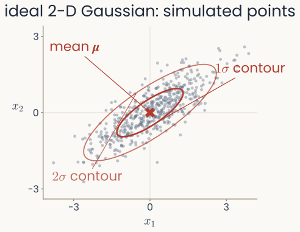
Five hundred points sampled from a two-dimensional Gaussian, forming a tilted elliptical cloud centered at the mean, with one- and two-standard-deviation elliptical contours
Open full-size figure{kind=link}
- Each simulated point contains two measurements, . These are draws from the model, not the 120 photographs.
- The mean becomes a mean vector , the center of the cloud; the covariance matrix describes its width, elongation and tilt.
- PCA will find the ellipse's principal axes.
Slide 10
Where is the cloud, and how does it spread?
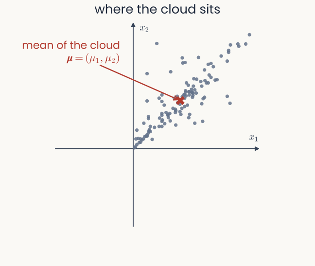
The two neighbouring pixels plotted in their raw zero-to-255 units, a cloud sitting well away from the origin, with a cross labeled mu = (mu1, mu2), marking its mean at approximately 102, 104
Open full-size figure{kind=link}
For each pixel , average over the images:
- Mean:
The cloud’s center is . - Variance:
Spread around the mean along that coordinate. - Standard deviation:
Spread in pixel-intensity units.
Slide 11
Where is the cloud, and how does it spread?
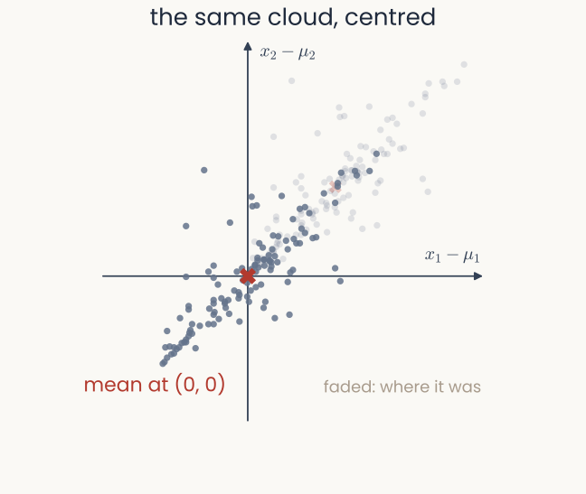
The same cloud after subtracting its mean, now sitting at the origin with the axes crossing through the middle of the points
Open full-size figure{kind=link}
- So subtract the mean from every point: . This is centering, and it slides the cloud until its centre sits at the origin.
- Everything from here on describes variation around the mean.
- A negative centered value means “darker than this pixel’s average,” not a negative raw intensity.
Slide 12
Centering, in code
mean = features.mean(axis=0) # (D,) mean response across stimuli, for each coordinate
centred = features - mean # (N, D) each stimulus response minus the mean response
featuresis the response matrix from the first lectures: one row per stimulus (images here), one column per coordinate.- The mean is a vector with one entry per coordinate. Subtracting it from every row leaves each column summing to zero.
- Keep the mean. Everything computed from here on is a difference from it, so we will want it back at the end.
Slide 13
Covariance: do the deviations go together?
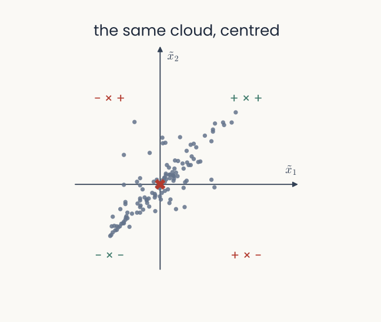
The same centered pixel cloud and coordinate frame as before, with axes x1 minus mu1 and x2 minus mu2. Signs in each quadrant show whether multiplying the two deviations gives a positive or negative result.
Open full-size figure{kind=link}
- These are the same centered responses: and . Same signs give a positive product; opposite signs give a negative product.
- Covariance is their average product:
. - Pearson correlation is covariance measured in standard-deviation units:
. - Two consequences lead directly to the covariance matrix:
,
.
Slide 14
The covariance matrix
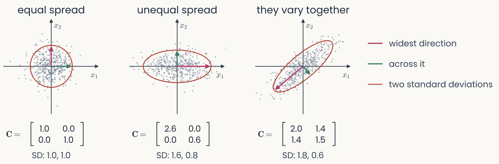
Three two-dimensional clouds side by side, each with its two-by-two covariance matrix printed underneath: a round cloud with equal spread in both directions, an ellipse stretched along the horizontal axis, and a tilted ellipse whose long axis runs diagonally
Open full-size figure{kind=link}
- In , the diagonal contains the two variances; the off-diagonal contains their covariance.
- Geometrically summarizes the cloud’s spread and orientation: round, an ellipse, or an ellipse tilted because the two vary together.
- The ellipse's long axis — its direction of greatest variance — is the direction we have been looking for.
Slide 15
Projection onto a unit direction
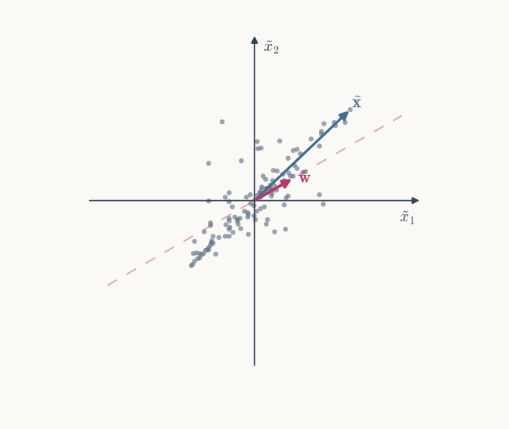
The two neighbouring pixels, centred, with one point marked as the centered vector x tilde, a magenta line through the origin along the unit direction w, and the construction of the projection
Open full-size figure{kind=link}
- Which direction gives the best one-number summary?
- A unit direction is any direction, written as a vector of length 1.
- The projection length of a centered point is : one number, its coordinate along .
Slide 16
Projection onto a unit direction
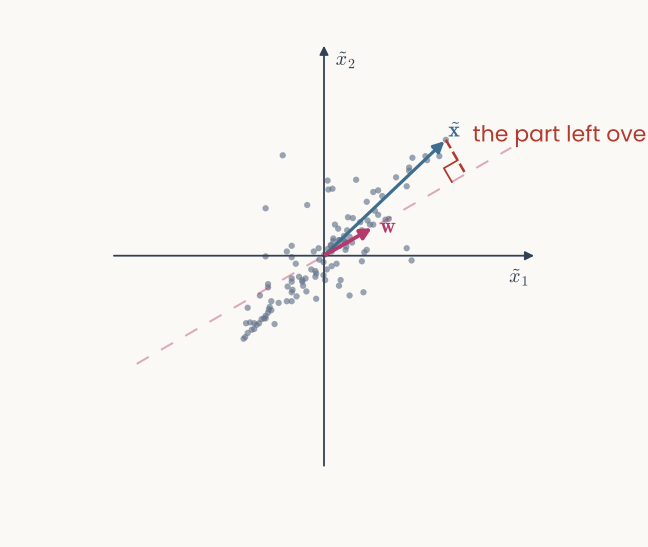
The two neighbouring pixels, centred, with one point marked as the centered vector x tilde, a magenta line through the origin along the unit direction w, and the construction of the projection
Open full-size figure{kind=link}
- Drop a perpendicular from onto the line of .
- The dashed segment is what the direction does not capture: the part of the point left over once its position along is known.
Slide 17
Projection onto a unit direction
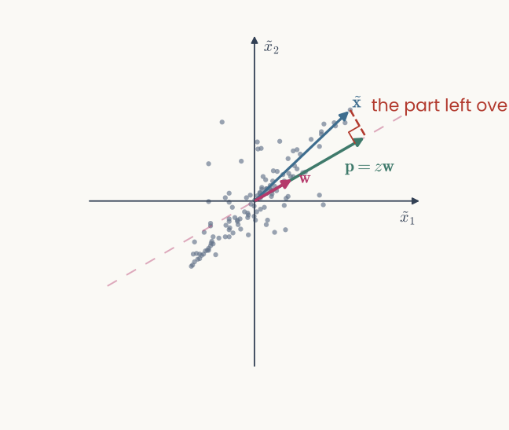
The two neighbouring pixels, centred, with one point marked as the centered vector x tilde, a magenta line through the origin along the unit direction w, and the construction of the projection
Open full-size figure{kind=link}
- The foot of that perpendicular is : the part of that lies along .
- Here : two coordinates become one score, .
- More generally, retained directions replace coordinates with scores.
Slide 18
A direction keeps part of the spread
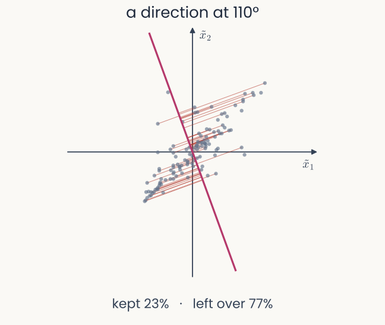
the two neighbouring pixels again, a direction drawn at 110 degrees, and a short red segment from every point to the line showing what that direction does not capture
Open full-size figure{kind=link}
- Project every point onto some direction. The red segments are what is left over: the part each point keeps to itself.
- At this angle the direction keeps 23% of the total spread and leaves 77% over.
Slide 19
Turn it until the leftovers are smallest
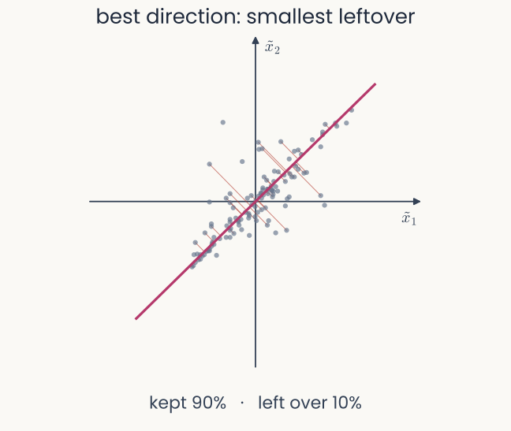
the same cloud with the direction turned to 44 degrees, along the length of the cloud, and the red segments now short
Open full-size figure{kind=link}
- Turn the direction until those segments are as short as possible: here at 44°, along the length of the cloud.
- Now it keeps 90% and leaves 10%. Same points, same projection, a better direction.
Slide 20
Spin the axis yourself
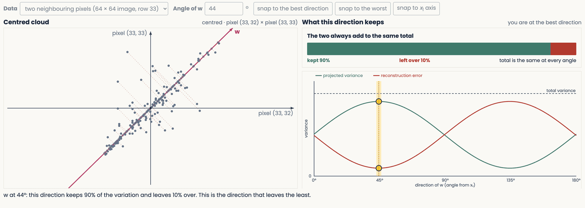
The axis-spinner demo with the direction at its best angle of 44 degrees: the centred cloud with the leftover segments drawn from each point, a bar showing 90 per cent kept against 10 per cent left over, and a sweep of both quantities against the angle with the smallest-error angle marked in gold
Open full-size figure{kind=link}
- Before turning the axis, predict which direction leaves the smallest error.
- Projected variance and squared reconstruction error add to a fixed total. Maximizing one minimizes the other.
Slide 21
Finding the best direction from covariance
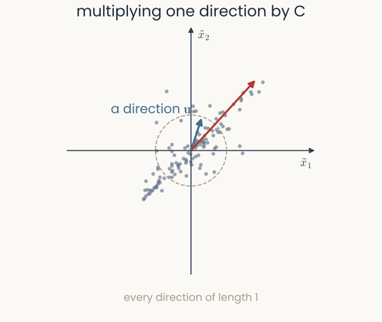
A dashed unit circle with one blue arrow from the origin to a point on it, labelled as a direction u, and a red arrow to where the matrix C sends it, pointing somewhere else
Open full-size figure{kind=link}
- We found that direction by turning a line and watching the leftovers. The covariance matrix gives it to us directly.
- The variance of the projections along a direction is . Finding the best direction means making that quantity as large as possible.
- Multiply any unit vector by . The result points somewhere else: the matrix has turned the direction.
Slide 22
What is an eigenvector?
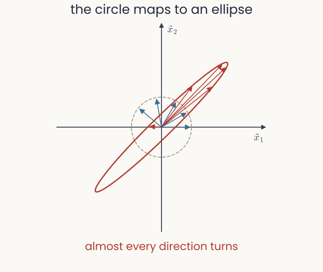
The same circle with sixteen unit arrows and their images under C, and the ellipse traced out by the images of every direction on the circle
Open full-size figure{kind=link}
- Do it for every direction on the circle. The transformed vectors trace an ellipse.
- Almost every direction comes out turned as well as rescaled.
Slide 23
What is an eigenvector?
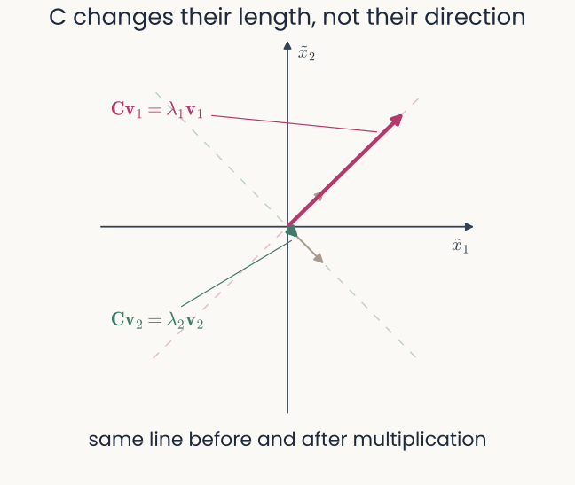
The circle and the ellipse with the two eigenvectors drawn: v1 sent back along itself stretched to 2.3, and v2 sent back along itself shrunk to 0.7
Open full-size figure{kind=link}
- Two directions are the exception: sends them straight back along themselves, only longer or shorter. They are the eigenvectors , and the factor is the eigenvalue : .
- Here the long one sits at 44° — the angle we turned the line to by hand.
- The direction that makes largest is the eigenvector with the largest eigenvalue. That is why they turned up: they answer the question we were turning the line to solve.
Slide 24
The eigenvalue is variance along that direction
The running pixel cloud with its best projection direction retaining 90 percent of variance
Open full-size figure- An eigenvector gives a direction; its eigenvalue gives the variance along it.
- Rank them by eigenvalue and take them in order: largest first, then the perpendicular direction with the next largest, and so on.
- Ranked this way the eigenvectors of are the principal components, the first is PC1, and computing them is principal component analysis (PCA).
Slide 25
From a line to a plane
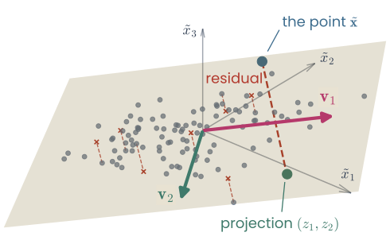
A three-dimensional cloud near a plane spanned by two principal directions; one point and its projection on the plane
Open full-size figure{kind=link}
- Keep two directions and describe each point by two coordinates.
- Keeping all directions changes the coordinate system without losing information.
- Keeping fewer directions replaces each point by its projection onto a line, a plane, or a higher-dimensional subspace.
Slide 26
The new coordinates are the PC scores
For one image, take its dot product with each retained direction:
- A direction gives weights on the original measurements.
- A score is this image's coordinate along that direction.
- Keeping directions gives numbers per image. These are the coordinates we plot or give to a readout.
Slide 27
Reconstruction: the way back
One centered pixel vector and its projection onto a retained direction; the residual joins them
Open full-size figure- Start from the mean.
- Add each retained direction, weighted by the image's score:
- The residual is the difference between the original and reconstructed measurements.
Slide 28
What do we lose when we keep fewer components?
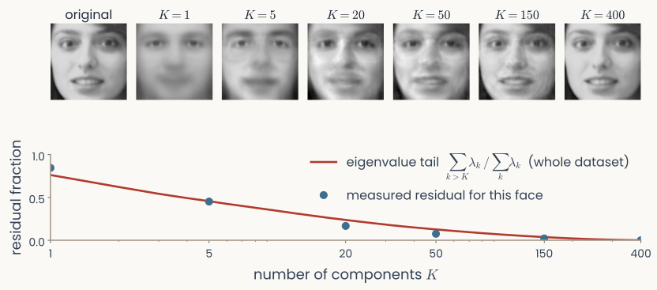
Top: one face reconstructed with K equal to 1, 5, 20, 50, 150 and 400 components, from a blurry near-average to the exact original. Bottom: the residual fraction for this face at each K as dots, compared with the eigenvalue tail computed from the whole dataset
Open full-size figure{kind=link}
- PCA on the pixels of 400 faces: increasing adds detail to the reconstruction.
- Dots: residual fraction for this face. Curve: discarded variance fraction across the dataset. The curve does not predict each face’s error.
Slide 29
How many components? The scree plot
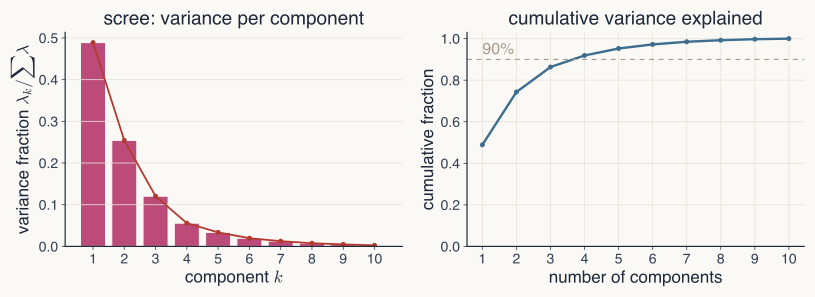
center Scree plot of variance per principal component falling to an elbow, beside the cumulative-variance curve climbing toward 100 percent
Open full-size figure- Scree (left): variance captured by each PC; look for the elbow.
- Cumulative (right): how many PCs to reach, e.g., 90% of variance.
- A variance threshold sets a reconstruction budget. It does not establish performance on a task.
Slide 30
PCA in scikit-learn
from sklearn.decomposition import PCA
pca = PCA(n_components=K, svd_solver="full")
Z = pca.fit_transform(X) # rows: images; columns: PC scores
fraction = pca.explained_variance_ratio_
axes = pca.components_ # one principal direction per row
- Score: an image's coordinate along a principal direction.
fit_transformcenters each feature across images. It does not z-score features.- SVD computes the PCA directions and variances from the centered data without explicitly forming its covariance matrix.
Slide 31
Can these directions help explain a neuron?
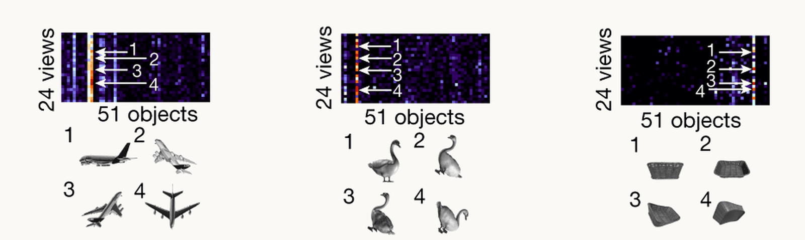
Three example IT cells from Bao and colleagues, each shown as a 24-view by 51-object response matrix with four views of the cell's preferred object picked out and shown underneath: an aeroplane, a swan and a basket
Open full-size figure{kind=link}
- Inferotemporal (IT) cortex is part of the primate visual pathway involved in object recognition.
- Each matrix shows one cell's responses: 51 objects × 24 views. A bright column means strong responses across views of one object.
- Can a space derived from a network's responses help organize these preferences?
Slide 32
Build an object space from network responses
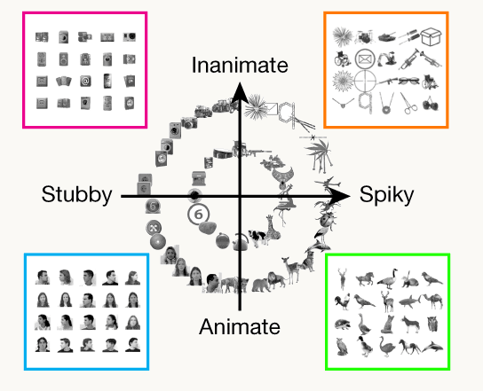
Complete published schematic of AlexNet object space with all four colored stimulus groups
Open full-size figure{kind=link}
- Present the 1,224 images to AlexNet and collect responses from its fc6 layer.
- Run PCA on those response vectors. In the paper, 50 components account for 85% of the variance.
- “Stubby–spiky” and “animate–inanimate” are interpretations of the axes. They need testing.
Slide 33
Test whether a direction predicts a response
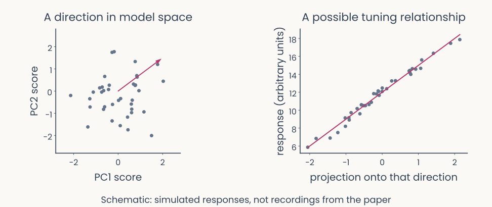
Schematic simulated example: projecting points in model space onto a direction gives a scalar related to a simulated neural response
Open full-size figure{kind=link}
- For each image, calculate its projection onto a candidate direction.
- Ask whether that coordinate predicts the cell's response on held-out images.
- The preferred direction can combine several PCs; it need not coincide with PC1 or PC2.
Slide 34
Neural preferences occupy different regions
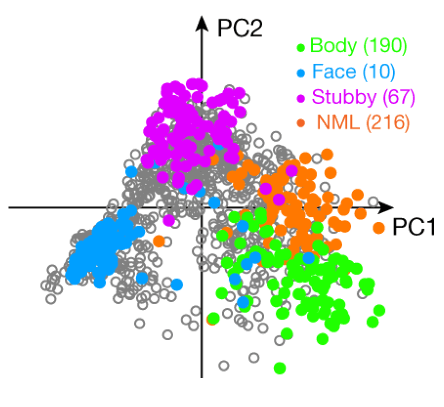
Grey stimulus points in the PC1-PC2 plane with four colored clouds — the preferred images of four IT patch systems — landing one per quadrant
Open full-size figure{kind=link}
- Grey circles are stimuli in the network-derived PC plane.
- Colored points are the most effective images for four IT patch systems, occupying different parts of that space.
- These preferences connect the model's population geometry with neural responses. The separate tuning analysis tests the relation to projection coordinates.
Slide 35
Use the space to make a new prediction
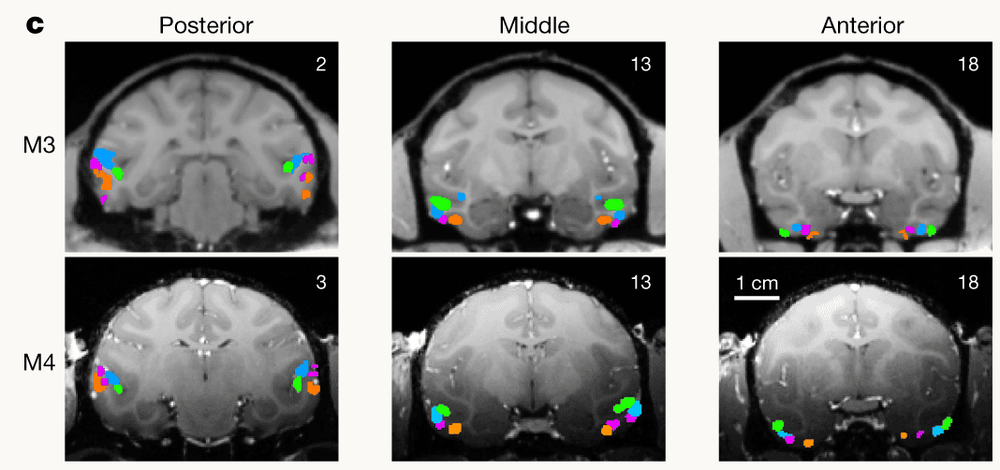
Published coronal fMRI maps from two monkeys, showing the four networks at posterior, middle and anterior IT; magenta marks the predicted stubby-object network
Open full-size figure{kind=link}
- The object space predicted a system responding to stubby, inanimate objects.
- fMRI located it (magenta); targeted recordings confirmed the object preferences.
- A description of a representation can guide a new experiment.
Slide 36
The measurement scale changes PCA
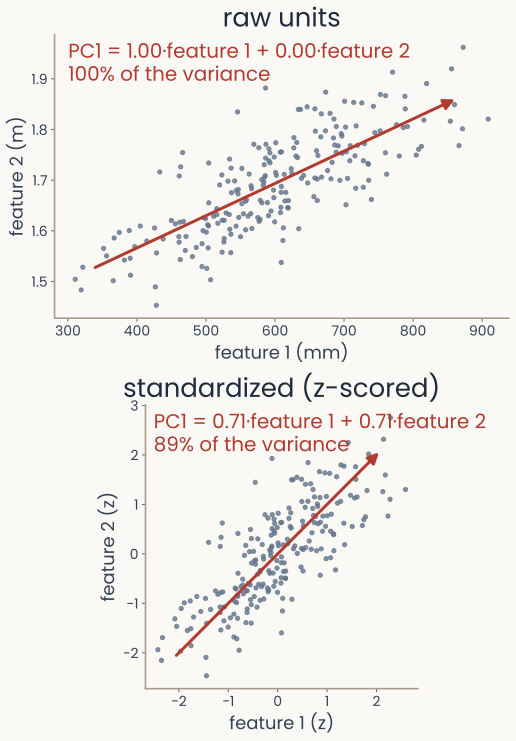
The same correlated cloud twice. Top, in raw units with feature 1 in millimetres and feature 2 in metres, PC1 equals 1.00 times feature 1 plus 0.00 times feature 2 and carries 100 percent of the variance. Bottom, after z-scoring, PC1 is 0.71 times each feature and carries 89 percent
Open full-size figure{kind=link}
- PCA maximizes variance, so a feature measured in millimetres dominates one measured in metres: in raw units PC1 is and the second feature is invisible.
- After z-scoring each feature, PC1 is and recovers the diagonal structure the two features share.
- Standardize when the units are not comparable. When they are comparable and the variances differ for real reasons, standardizing changes the relative weighting of features — it is a modelling decision, not a default.
Slide 37
Most variance need not mean most useful
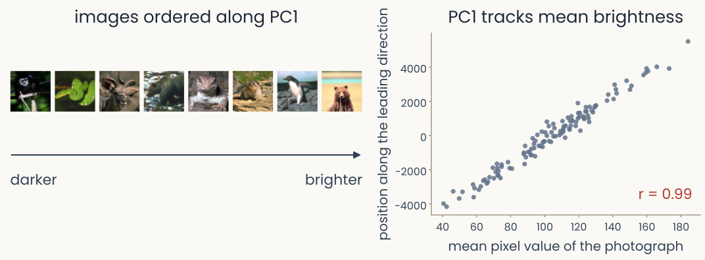
Left: the 120 photographs laid out along the leading direction of their pixel coordinates, running from dark pictures to bright ones with animals of different categories interspersed. Right: position along that direction plotted against the mean pixel value of each photograph, an almost perfect straight line, r equals 0.99
Open full-size figure{kind=link}
- The largest direction in the 120 photographs carries 29% of the variation and is strongly related to overall brightness: ordered along it they run dark to bright, different categories interspersed.
- PCA ranks directions by variance, and variance is not relevance.
Slide 38
Which direction would you keep?
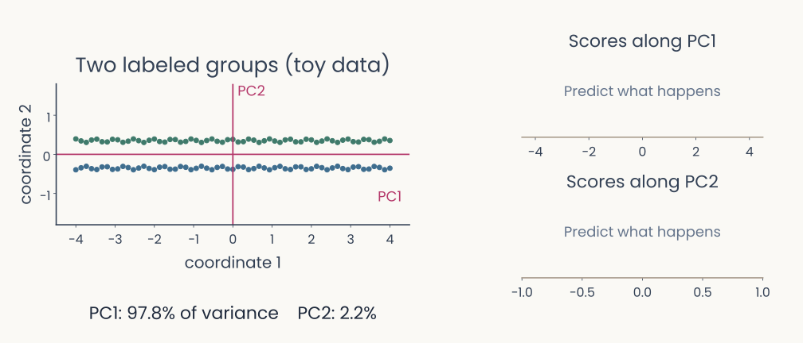
Toy classes with a high-variance horizontal direction and low-variance vertical separation; projection panels ask for a prediction
Open full-size figure{kind=link}
- The groups vary mainly from left to right. Their labels differ from top to bottom.
- Which direction would best reconstruct the points?
- Which direction would best distinguish the groups?
Slide 39
Low variance can still separate the groups
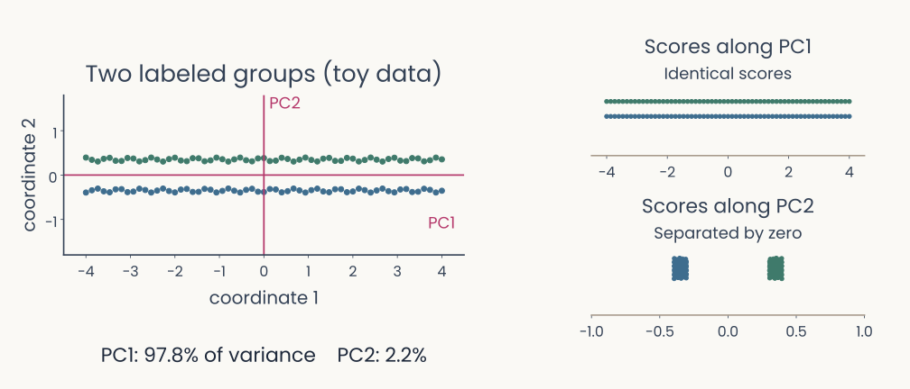
Toy classes with a high-variance horizontal direction and low-variance vertical separation; PC1 scores overlap while PC2 scores separate the classes
Open full-size figure{kind=link}
- PC1 retains 97.8% of variance, but both groups have the same PC1 coordinates.
- PC2 retains 2.2%, yet a threshold at zero separates the groups.
- Variance measures spread. Task relevance depends on what we want to distinguish.
Slide 40
What did one direction buy us?
Return to the two neighboring pixels and the direction retaining approximately 90 percent of their variance
Open full-size figure- Two pixel measurements became one score, retaining about 90% of their variance.
- Eigenvalues tell us how much variation a linear reconstruction keeps and loses.
- To know whether that score supports a task or explains a neural response, we need an additional test.
Slide 41
What if the variation follows a curve?
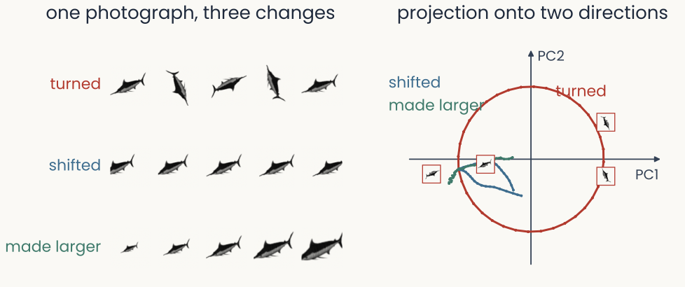
Rotated, shifted and resized versions of an image projected into two PCA directions; rotation traces a closed curve
Open full-size figure{kind=link}
- Changing one image parameter can trace a curved path in a large pixel space.
- PCA approximates data with a flat subspace.
- Next: nonlinear maps, and how to check what their geometry preserves.
Slide 42
Further reading for the research trail
- Bao et al. (2020): object-space axes and IT responses. Nature
- Chang & Tsao (2017): face-space directions and individual neurons. Cell
- Turk & Pentland (1991): eigenfaces. J. Cogn. Neurosci.
- DiCarlo & Cox (2007): untangling object representations. Trends Cogn. Sci.
- Stringer et al. (2019): a structured, high-dimensional neural spectrum. Nature
Pick one of these, read it, and use its reference list to find the two or three papers it builds on. That is your trail.
Slide 43
Minute paper
Submit on Canvas → Minute papers → Minute Paper 4.
Write three brief points in your own words:
- Why do we center the data before finding the principal directions?
- Something you do not yet understand, or a question still open
- Another idea you found interesting, and why it matters for brains, behavior or AI
Credit for a thoughtful attempt, not for being correct.
Slide 44
Appendix: examples and implementation details
Additional examples, the PCA/SVD implementation, and assignment reference material.
Use these explanations as needed while working through the notebooks. The live lecture develops the main geometric argument.
Slide 45
One direction was not enough
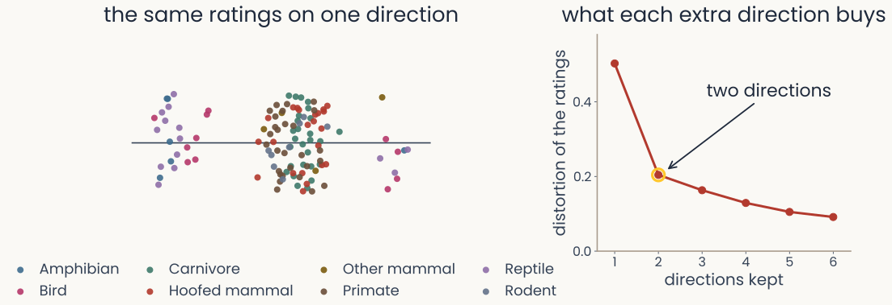
Left: the same 120 photographs placed on a single direction, coloured by animal category, with the categories piled on top of one another. Right: the distortion of the ratings plotted against the number of directions kept, falling steeply from one to two and then flattening out
Open full-size figure{kind=link}
- Fit the same ratings on one direction and the categories pile up: the distances in the fit no longer match the judged dissimilarities.
- A second direction removes most of that distortion. A third and a fourth remove very little. Two directions greatly improve the fit, but some distortion remains.
Slide 46
How far does the dependence reach?
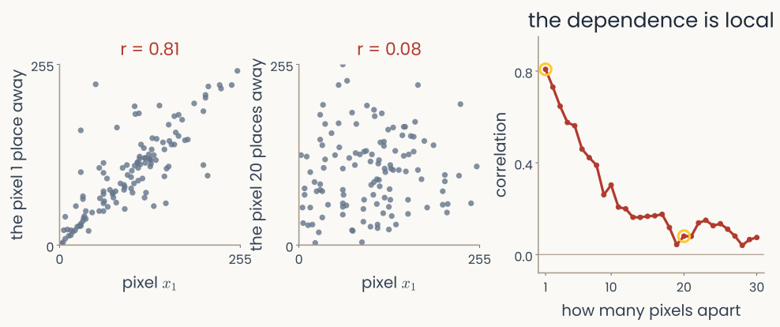
Three panels. Left: a pixel plotted against its immediate neighbour across the 120 photographs, the points hugging the diagonal at r equals 0.81. Middle: the same pixel against the one twenty places away, a formless cloud at r equals 0.08. Right: the correlation plotted against separation, falling steeply over the first few pixels and flattening near zero
Open full-size figure{kind=link}
- The same pixel-pair computation, at larger separations: one pixel against another, across the same 120 photographs.
- Next door, the two pixel values strongly covary. Twenty pixels away it tells you almost nothing.
- Neighbouring measurements are strongly dependent, and the dependence is local.
Slide 47
One object, many images
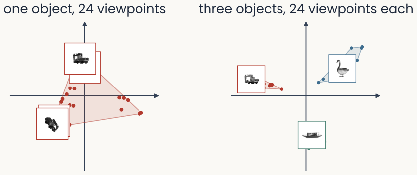
Left: the 24 viewpoints of one object plotted in two directions of its own responses, filling a single compact patch, with four of the views shown. Right: three objects, each of whose 24 viewpoints occupies a separate patch of the same plane
Open full-size figure{kind=link}
- Photograph one object from 24 viewpoints: 24 very different images, and in the network's response space they fill one small patch.
- For these three objects, the views occupy different regions. Viewpoint varies within each object; identity differs between objects.
Slide 48
The same picture, drawn by hand
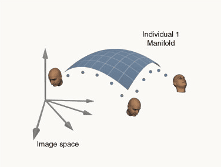
One person's face images trace a curved sheet, a manifold, inside image space, with three example heads at different poses sitting on it
Open full-size figure{kind=link}
- As DiCarlo and Cox drew it: every image of one person forms a curved sheet, and the sheet has far fewer dimensions than the space holding it.
Slide 49
Two sheets, tangled
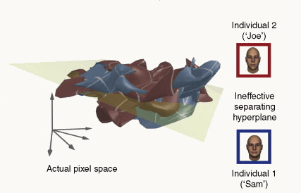
In actual pixel space the sheets of two different people are interleaved, and no flat plane separates them
Open full-size figure{kind=link}
- In pixel coordinates the sheets of two people are interleaved, which is why no simple rule separates them there.
- Perception can be read as untangling: finding coordinates in which the sheets pull apart. PCA finds linear directions. Nonlinear maps can reveal other relationships, but do not guarantee recognition.
Slide 50
Why more dimensions make learning harder
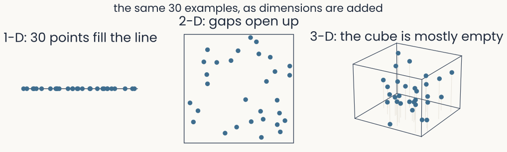
Thirty examples cover a line densely, leave gaps in a square and leave a cube mostly empty
Open full-size figure{kind=link}
- Covering a space at a fixed resolution costs examples, ten values per axis giving 100 in two dimensions, for a image and for a one.
- Raise the resolution and the number of coordinates explodes; the number of images we can collect does not.
Slide 51
Same images, different coordinates
Two scatter plots. Left, in pixel coordinates, the distance between two photographs plotted against how dissimilar people judged them: a formless cloud with a flat median line and a rank correlation of 0.01. Right, in the late layer of a trained network, the same plot rises clearly, rank correlation 0.42
Open full-size figure{kind=link}
- Every pair: how far apart the two images are, against how dissimilar people judged them.
- In pixel coordinates there is almost no monotonic association, . In a trained network's late layer, .
- Same images, same measure. What changed is the coordinates.
Slide 52
PCA = eigendecomposition of
Covariance (centered, samples): (code divides by ; same eigenvectors)
Eigendecomposition (orthonormal ):
- Principal axes = eigenvectors of .
- Variance along = .
- , the eigenvector with the largest eigenvalue.
Slide 53
PCA in code: two routes to the same answer
centred = features - features.mean(axis=0)
# Route 1: eigendecomposition of sample covariance
C = np.cov(centred.T)
lam, V = np.linalg.eigh(C) # ascending order
lam, V = lam[::-1], V[:, ::-1] # descending order
# Route 2: SVD, without forming C
_, s, Vt = np.linalg.svd(centred, full_matrices=False)
lam2 = s**2 / (len(centred) - 1)
V2 = Vt.T # directions as columns
Z = centred @ V2[:, :K] # (n, K) scores
- Use
eigh, noteig: is symmetric, so the eigenvalues are real andeighis faster and stabler. It returns them ascending, so the reversal is not optional. - Prefer route 2. Forming costs memory; for a color image and would be ~309 GB in float64. SVD never builds it. Sign is arbitrary: and are both valid; Assignment 2's helper fixes it so the largest entry is positive.
Slide 54
Eigenfaces
PCA on 400 faces, and a classic approach to face recognition.
Slide 55
PCA as compression — eigenfaces
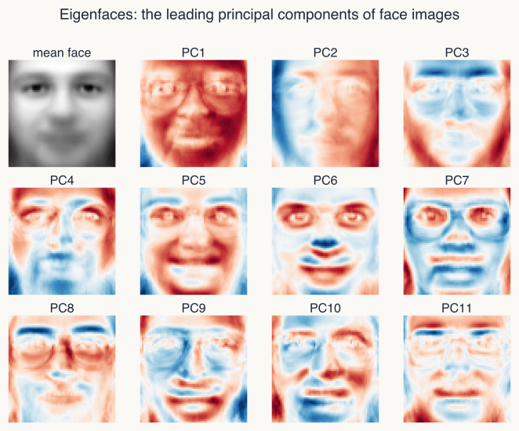
center Grid of the mean face and leading eigenfaces, with opposing signs shown in red and blue
Open full-size figureStack face images as vectors and run PCA → the leading eigenvectors are eigenfaces: ghostly, face-like basis images. PCA discovers a useful representation, not just a single direction.
Slide 56
Face space: the plane, with real faces on it
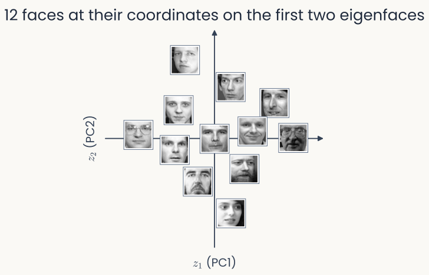
Twelve face photographs placed on a plane at their coordinates along the first two eigenfaces, z1 on the horizontal axis and z2 on the vertical
Open full-size figure{kind=link}
- The same plane, with data on it: 400 face images ( pixels, so ), PCA on the centred pixels, and twelve of the faces drawn at their coordinates on the first two eigenvectors.
- Two numbers per face instead of 4,096. They carry 24% and 14% of the variance: a coarse, lossy summary, but already one in which lighting and head pose vary smoothly across the plane.
- This is a face space: every face is a point, and nearby points are faces that look alike to the two leading eigenfaces. The preceding slide shows those eigenfaces as images.
Slide 57
A face = mean + a few eigenfaces
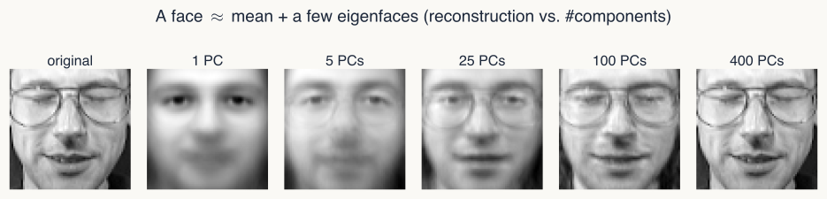
center A face reconstructed using 1, 5, 25, 100 and 400 components, beside the original image
Open full-size figure- These faces can be approximated by the mean face plus a weighted sum of eigenfaces. More components add finer detail.
- The coefficients can also be used for recognition. Whether they preserve identity needs a recognition test.
Slide 58
Mix your own face
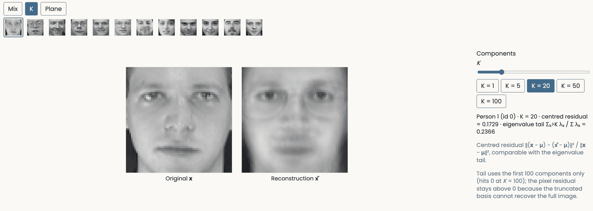
The eigenface mixer's K tab: one Olivetti face beside its reconstruction from the first 20 components, with the residual fraction and the eigenvalue tail printed
Open full-size figure{kind=link}
- Each slider sets one coefficient in mean + weighted eigenfaces.
- Set a coefficient to zero to remove that direction’s contribution.
Slide 59
Two views, one answer
- Maximize the variance of the projections:
- Minimize the squared reconstruction error:
- These are the same problem: total variance is fixed, so whatever the projection captures, the residual loses. Both are solved by the top eigenvector of .
- For retained PCs, the average squared fitting-data reconstruction error is (using covariance divided by ).
- Connection to MDS: classical MDS on a Euclidean dissimilarity matrix returns the PCA coordinates up to an orthogonal transformation of the centered data. MDS was doing an eigendecomposition all along — it just never told you which axis was which.
Slide 60
PCA as decorrelation & whitening
- Project onto the eigenbasis and the new coordinates are uncorrelated — the covariance becomes diagonal. For positive eigenvalues, rescale each retained axis by and you get whitening: zero correlation, unit variance.
- Why analysts reach for it:
- remove redundancy between measured dimensions before modeling
- decorrelate inputs, without assuming the resulting features are independent
- compress by dropping directions; whether this denoises depends on what they contain
Slide 61
What do the components look like?
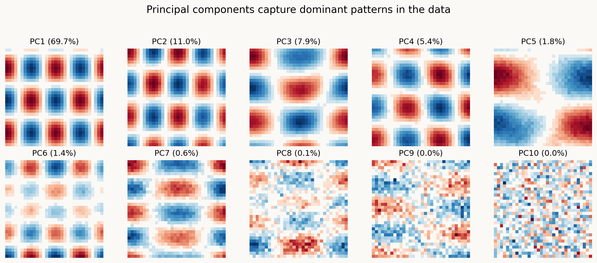
center Principal components of synthetic image patterns, shown as red and blue signed weights: structured patterns dominate early components and noise appears in later ones
Open full-size figure- Each eigenvector is a vector in the original space — so each PC un-rolls back into a picture. Here the inputs are synthetic patterns: early components recover structured variation; later ones contain little variance.
- PCA is more than compression: we can inspect the weights on the original variables, then test what they capture.
Slide 62
Dimension counts depend on sampling
For centered observations with features:
| Input to PCA | Rows | What changes |
|---|---|---|
| All objects and views | 1,224 | Identity and viewpoint both vary |
| Mean over views for each object | 51 | Viewpoint variation is averaged |
| One view per object | 51 | Same row count, viewpoint retained |
| Random image subset | 51 | Row-count control |
With 51 rows, at most 50 components can have nonzero variance.
Slide 63
Identity and viewpoint contribute variance
For equal numbers of views per object:
- Within: average variation around each object's mean.
- Between: variation of object means around the overall mean.
- Example: total . Within ; between .
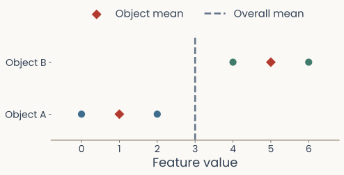
Two objects with feature values zero and two versus four and six, object means one and five, and overall mean three
Open full-size figure{kind=link}
Slide 64
Testing an interpretation of a PC
| Hypothesis | Measurement | Test against PC scores |
|---|---|---|
| Animacy | Binary label, 0 or 1 | Point-biserial correlation |
| Spikiness | from the object outline | Spearman rank correlation |
- Point-biserial correlation is Pearson correlation with one binary variable.
- : outline perimeter. : silhouette area. Scaling a shape by 2 multiplies and by 4, leaving their ratio unchanged.
- Test both PCs and both properties. A correlation supports an association, not a unique semantic interpretation.
Slide 65
Preprocessing neural responses
- Missing responses: drop units with too many missing values, then replace remaining missing values by that unit's observed mean; or drop every incomplete unit.
- Centering: subtract each unit's mean across images.
- Standardizing: also divide each unit by its standard deviation. A unit with standard deviation zero needs separate handling.
- Raw-response PCA gives high-variance units more influence. Z-scored PCA puts units on comparable scales.
Example: standard deviations and imply variances and . After z-scoring, both variances are .
Slide 66
The rainbow cortex is three numbers per voxel
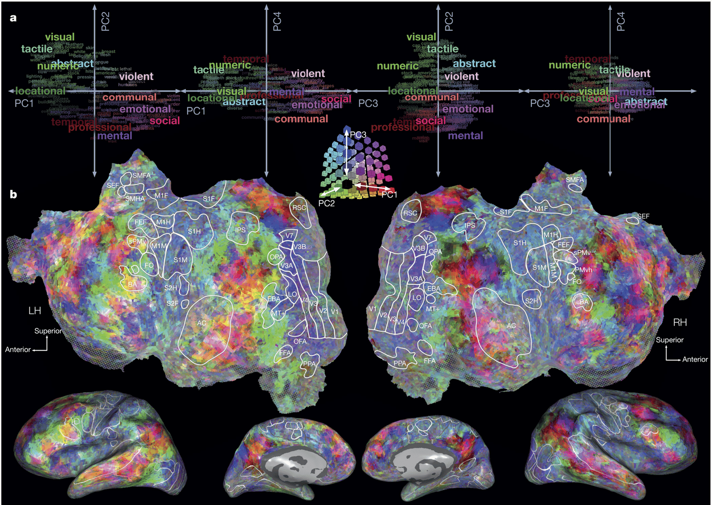
Complete published panels showing projections of word-related features above cortical surfaces, where every voxel is colored by its first three PCA coordinates — red for PC1, green for PC2, blue for PC3 — producing a smooth rainbow map across cortex
Open full-size figure{kind=link}
- Over two hours of narrated stories, one regression per voxel: every voxel gets a vector of weights on word-related features, and cortex is one more matrix.
- PCA on it, keep three components, color each voxel by its coordinates: PC1 → red, PC2 → green, PC3 → blue. The palette is the projection .
Slide 67
PCA only ever finds a flat subspace
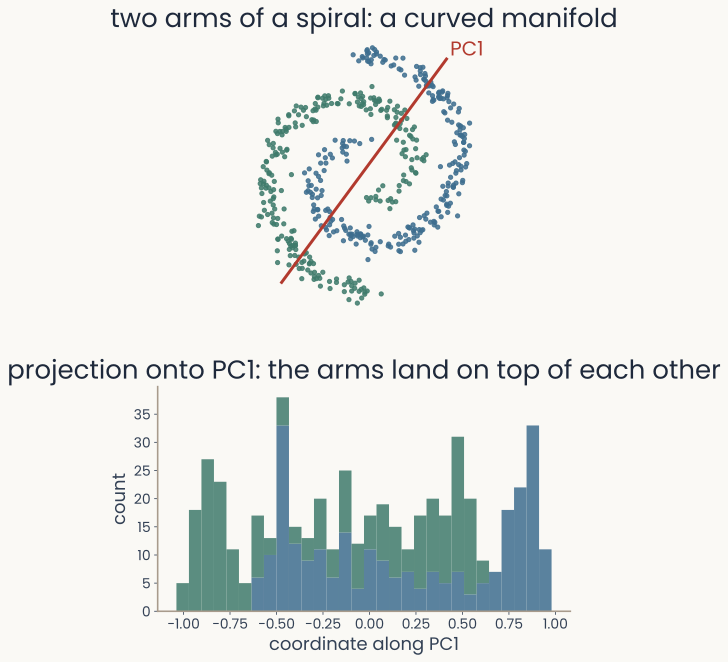
Top: two interleaved spiral arms, one blue and one green, with the PC1 line drawn through them. Bottom: the histogram of the coordinates along PC1, where the two arms overlap almost completely
Open full-size figure{kind=link}
- PCA can only find a flat subspace. If the data lie on a curved manifold — a spiral, a Swiss roll, a torus — a low-dimensional linear projection can fold distinct regions onto each other.
- Two points far apart along the manifold can land on top of each other after projection: the two arms are perfectly distinct in the plane and inseparable along PC1.
- t-SNE and UMAP construct nonlinear maps emphasizing local relationships. Their displays can distort global structure and need their own checks.